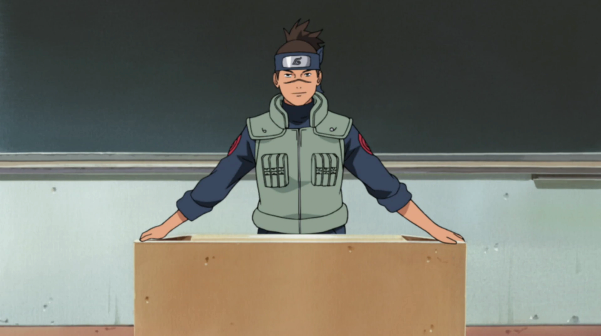
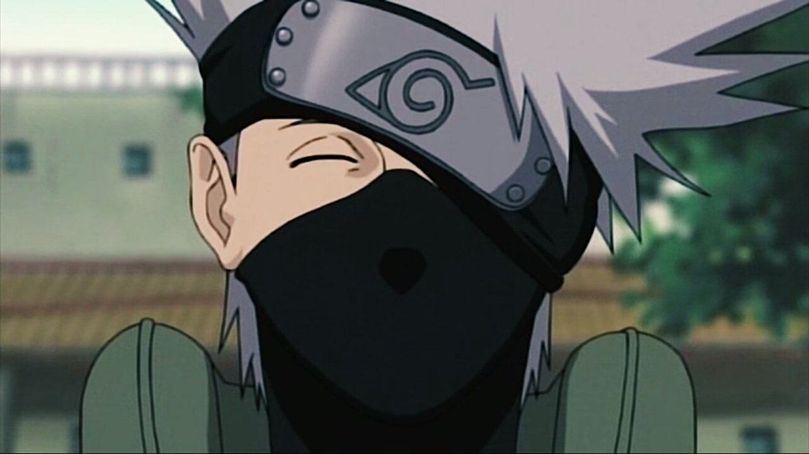
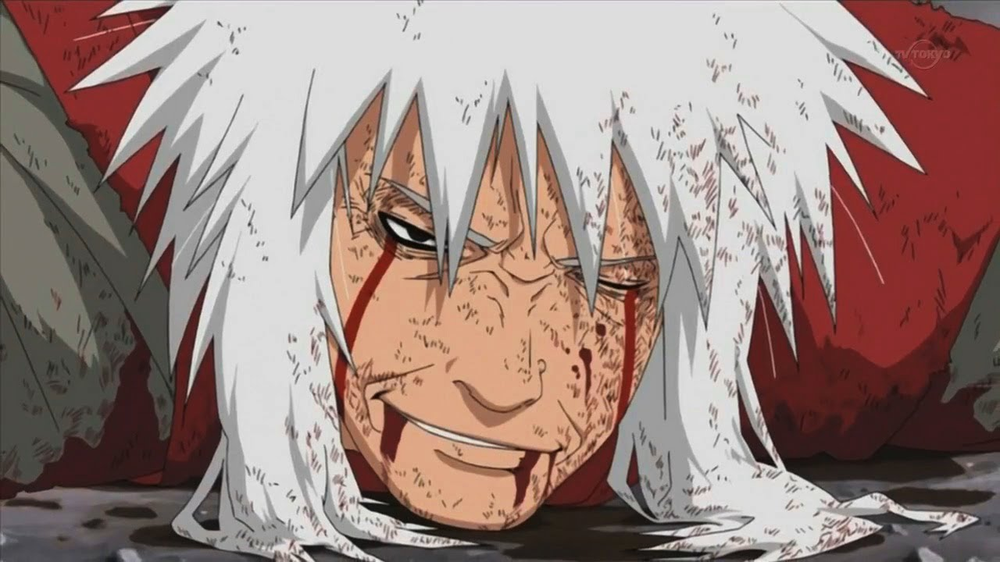

Все учителя Наруто
Ирука

Ирука Умино (яп. うみのイルカ, Умино Ирука) — чуунин Деревни Скрытого Листа, который изначально был инструктором в Академии. В настоящий момент является директором Академии.
Какаши

Какаши Хатаке (яп. はたけ カカシ Хатакэ Какащи) — шиноби Скрытого Листа из клана Хатаке. Более известный как Какаши Шарингана (яп. 写輪眼のカカシ, Щаринган но Какащи), благодаря подарку Обито Учиха. Является одним из самых талантливых ниндзя Конохи. В прошлом капитан Анбу, Какаши возглавляет Команду 7. После окончания Четвёртой Мировой Войны Шиноби Какаши становится Шестым Хокаге Конохи (яп. 六代目火影, Рокудаймэ Хокаге; досл. Шестая Тень Огня).
Джирайя

Джирайя (яп. 自来也, Джирайя) был одним из трех легендарных Саннинов Конохагакуре. Прославившийся как отшельник и извращенец с изумительными способностями ниндзя, Джирайя путешествовал по миру в поисках знаний, которые могут помочь его друзьям, писал различные романы и исследовал мир во всей полноте. Впоследствии, все его знания и идеалы перешли к его крестнику и последнему ученику, Наруто Узумаки. Он погиб, сражаясь с Пейном, в Деревне Скрытого Дождя.